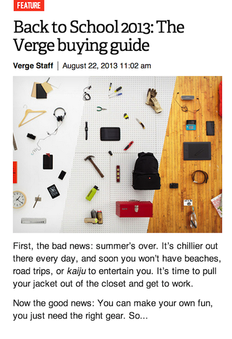
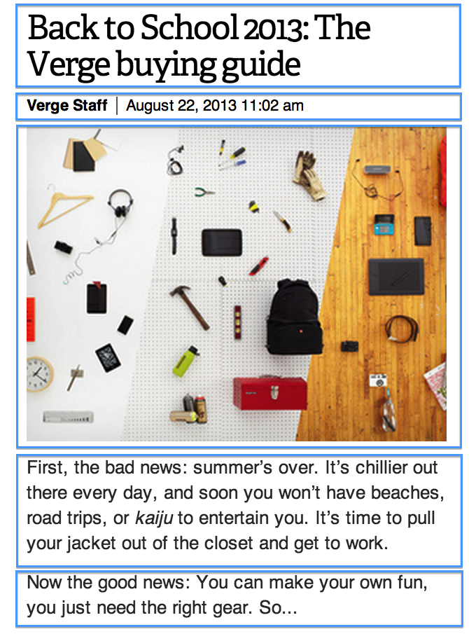
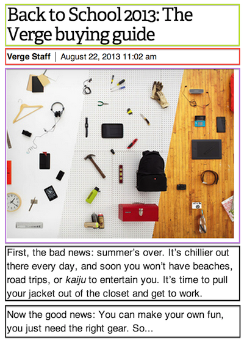
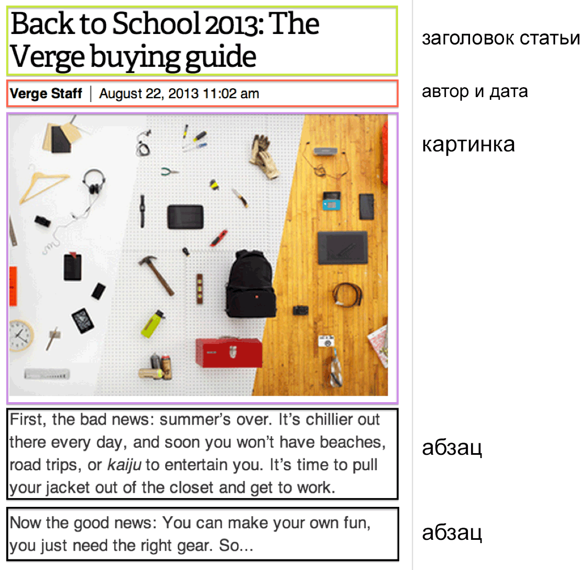

Сайты и Lego
Мне очень нравится The Verge. Это сайт, где можно найти интересные статьи о новых технологиях, науке и культуре. На домашней странице вы можете увидеть десятки очерков и статей, которые стремятся выглядеть похожими друг на друга. Они имеют заголовок, категорию, дату и фотографию. Это практически напоминает строительство из кирпичиков.
Взглянем на один из них:

На первый взгляд ничего сложного. Давайте немного повеселимся и выделим (или отметим) каждый элемент, как если бы мы имели дело с деталями Lego.

В общей сложности, у нас есть пять фрагментов, расположены один над другим.
Вы, возможно, помните из детства, что для строительства чего-то конкретного нужно много разных блоков, которые полезны для различных вещей. Каждый из них имеет определённую функцию. Например, при строительстве дома, один тип полезен для стен, а другой полезнее для пола. Нет единого, универсального блока или элемента, из которого вы можете сделать что-нибудь приходящее на ум. Видите фотографию ниже? Вот так должен выглядеть большой выбор вариантов Lego, не правда ли?

То же самое и с сайтами. Когда вы создаёте свой сайт, то используете различные элементы в соответствии с их идеальным назначением. В примере с Verge видно, что мы имеем дело с разнообразными объектами (или блоками), таким образом применять один цвет или стиль к каждому блоку будет нелогичным. В конце концов, заголовок не такой как дата или содержание абзаца. Каждый из них выполняет совершенно разные функции.
Для продолжения мы должны выделить элементы статьи по их функциями, которые они выполняют на сайте. Давайте сделаем это, добавив уникальный цвет для каждого «блока».

Так гораздо интереснее. Теперь у нас есть несколько различных типов «строительных блоков». Только два блока относятся к одному типу, в частности, два абзаца на рисунке ниже. Это ничем не отличается от организации Lego. Мы собираемся держать вместе похожие фрагменты текста, которые относятся к одной группе. Чисто формально, давайте назовём каждый раздел, в зависимости от его функции в контексте статьи.

Таким образом, мы пометили каждый элемент в соответствии с его семантическим значением. Это именно то поведение и логика, которое мы ожидаем увидеть от браузера. Наша работа — рассказать браузеру так, чтобы ему стало понятно, что обозначает каждый из этих элементов и как они сочетаются друг с другом синтаксически. Если это не будет сделано, то наш сайт станет выглядеть как комок единого текста.
Вы, возможно, уже создавали такие страницы или статьи с помощью текстового редактора вроде Microsoft Word или Pages. В текстовых редакторах добавление эффектов вроде «стиль заголовка» вопрос нажатия нескольких кнопок. Другими словами, когда мы выделяем текст в редакторе и нажимаем «Заголовок 1», то присваиваем ему в фоновом режиме кучу разных функций, что говорит редактору отобразить текст определённым образом.
Поэтому если бы мы хотели воссоздать страницу, как в приведённом выше примере в текстовом редакторе — это было бы просто и легко. В этот момент вы, вероятно, закрыли бы эту книгу и пошли делать что-то ещё («Во все тяжкие» хорошая альтернатива). Проблема в том, что мы хотим отобразить эту статью в Интернете, которая должна быть показана в браузере, а никак не в программе для редактирования текста.